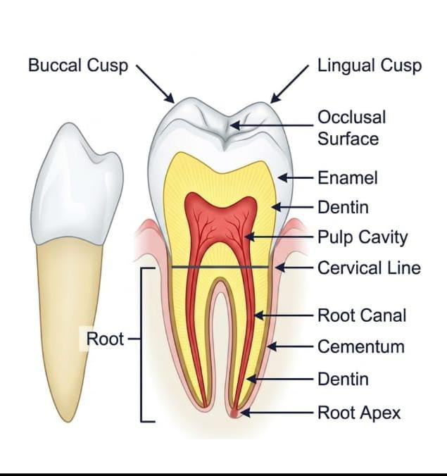
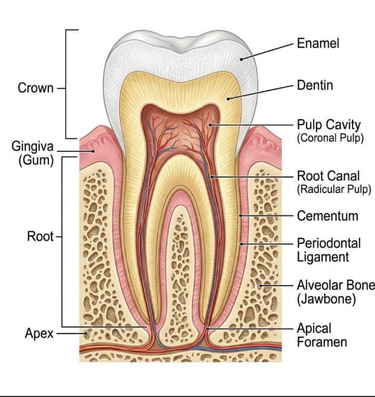
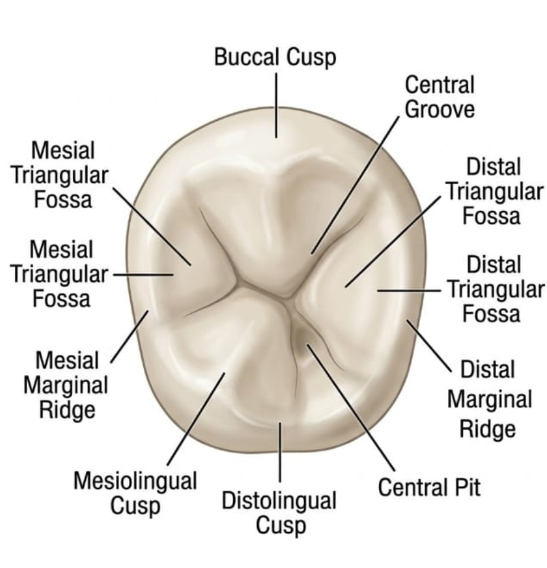

تفاصيل السنة الأولى
اكتب هنا الكلام والشرح التفصيلي الخاص بالسنة الأولى.
اختر السنة من الأزرار العلوية لعرض التفاصيل والشرح الخاص بها

اكتب هنا الكلام والشرح التفصيلي الخاص بالسنة الأولى.

اكتب هنا الكلام والشرح التفصيلي الخاص بالسنة الثانية.

اكتب هنا الكلام والشرح التفصيلي الخاص بالسنة الثالثة.